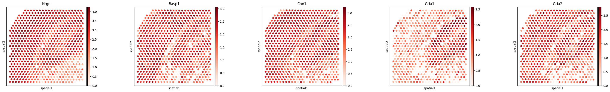
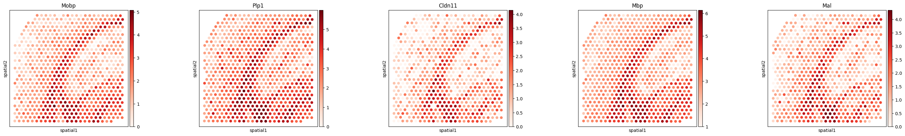

AdultMouseBrain (Visium) In Silico Knockout Tutorial
Note: To run this notebook, please first complete and execute the AdultMouseBrain (Visium) Analysis Tutorial notebook and save the resulting output files as instructed.
[1]:
from models.downstreamGenes import *
import numpy as np
import squidpy as sq
import scanpy as sc
import pickle
from models.help_func import build_cell_lr_tensor,set_seed
import matplotlib.pyplot as plt
set_seed(42)
/home/jtyu@ZHANGroup.local/miniconda3/envs/scild/lib/python3.10/site-packages/dask/dataframe/__init__.py:31: FutureWarning: The legacy Dask DataFrame implementation is deprecated and will be removed in a future version. Set the configuration option `dataframe.query-planning` to `True` or None to enable the new Dask Dataframe implementation and silence this warning.
warnings.warn(
/home/jtyu@ZHANGroup.local/miniconda3/envs/scild/lib/python3.10/site-packages/anndata/utils.py:434: FutureWarning: Importing read_text from `anndata` is deprecated. Import anndata.io.read_text instead.
warnings.warn(msg, FutureWarning)
Import data and SCILD results
[2]:
adata = sc.read_h5ad('./data/AdultMouseBrainVisium_adata_processed.h5ad')
adata
[2]:
AnnData object with n_obs × n_vars = 704 × 16562
obs: 'in_tissue', 'array_row', 'array_col', 'cluster', 'cluster_short'
var: 'gene_ids', 'feature_types', 'genome'
uns: 'spatial'
obsm: 'spatial'
[3]:
with open("./results/AdultMouseBrainVisium_SCILD_result.pkl", "rb") as f:
SCILD_res = pickle.load(f)
[4]:
SCILD_tensor, ligands, receptors = build_cell_lr_tensor(SCILD_res, adata.shape[0])
ligand_to_index = {lig: idx for idx, lig in enumerate(ligands)}
receptor_to_index = {rec: idx for idx, rec in enumerate(receptors)}
[5]:
SCILD_tensor.shape
[5]:
(704, 122, 137)
Train the NN model
[6]:
model = train_model(
SCILD_tensor,
Y=adata.X.A,
epochs=500,
batch_size=64,
lr=1e-3,
val_split=0.2,
patience=20
)
Training Epochs: 23%|██▎ | 114/500 [00:44<02:32, 2.54it/s, Epoch=115, Train Loss=0.0956, Val Loss=0.0972, LR=0.000031]
Early stopping at epoch 116

In silico knockout of Psap->Gpr37
[8]:
ligand_ = 'Psap'
receptor_ = 'Gpr37'
TG_name = list(adata.var.index)
ablation_results = ablation_analysis(
model,
SCILD_tensor,
l_idx=ligand_to_index[ligand_],
r_idx=receptor_to_index[receptor_],
gene_names=TG_name,
title_=f"In silico knockout impact of L={ligand_}, R={receptor_}",
save_file='./results/AdultMouseBrainVisium_InSilicoKnockout_PsapGpr37_result.svg')
Top 10 affected genes (by magnitude) after ablating L=81, R=55:
1. Mobp — Δexpr = -0.2119 ↓
2. Plp1 — Δexpr = -0.1989 ↓
3. Cldn11 — Δexpr = -0.1740 ↓
4. Mbp — Δexpr = -0.1651 ↓
5. Mal — Δexpr = -0.1617 ↓
6. Trf — Δexpr = -0.1613 ↓
7. Cnp — Δexpr = -0.1607 ↓
8. Ptgds — Δexpr = -0.1506 ↓
9. Gpr37 — Δexpr = -0.1475 ↓
10. Plekhb1 — Δexpr = -0.1435 ↓
Top 5 Upregulated Genes:
1. Nrgn — Δexpr = +0.0653 ↑
2. Basp1 — Δexpr = +0.0652 ↑
3. Chn1 — Δexpr = +0.0610 ↑
4. Gria1 — Δexpr = +0.0585 ↑
5. Gria2 — Δexpr = +0.0580 ↑
Top 5 Downregulated Genes:
1. Mobp — Δexpr = -0.2119 ↓
2. Plp1 — Δexpr = -0.1989 ↓
3. Cldn11 — Δexpr = -0.1740 ↓
4. Mbp — Δexpr = -0.1651 ↓
5. Mal — Δexpr = -0.1617 ↓

[9]:
adata.obs[ligand_ + '->' + receptor_] = SCILD_tensor[:, ligand_to_index[ligand_], receptor_to_index[receptor_]]
sq.pl.spatial_scatter(adata, color=ligand_ + '->' + receptor_, cmap='Blues', shape=None, size=40, figsize=(10, 2.5))
Please specify a valid `library_id` or set it permanently in `adata.uns['spatial']`

[10]:
sq.pl.spatial_scatter(adata, color=[TG_name[i] for i in ablation_results['top_up_idx']],
cmap='Reds', shape=None, size=100, ncols=5)
Please specify a valid `library_id` or set it permanently in `adata.uns['spatial']`

[11]:
sq.pl.spatial_scatter(adata, color=[TG_name[i] for i in ablation_results['top_down_idx']],
cmap='Reds', shape=None, size=100, ncols=5)
Please specify a valid `library_id` or set it permanently in `adata.uns['spatial']`

In silico knockout of Cck->Cckbr
[12]:
ligand_ = 'Cck'
receptor_ = 'Cckbr'
TG_name = list(adata.var.index)
ablation_results = ablation_analysis(
model,
SCILD_tensor,
l_idx=ligand_to_index[ligand_],
r_idx=receptor_to_index[receptor_],
gene_names=TG_name,
title_=f"In silico knockout impact of L={ligand_}, R={receptor_}",
save_file='./results/AdultMouseBrainVisium_InSilicoKnockout_CckCckbr_result.svg')
Top 10 affected genes (by magnitude) after ablating L=15, R=17:
1. Plp1 — Δexpr = +0.0223 ↑
2. Mbp — Δexpr = +0.0195 ↑
3. Mobp — Δexpr = +0.0191 ↑
4. Cldn11 — Δexpr = +0.0160 ↑
5. Mef2c — Δexpr = -0.0142 ↓
6. Ptgds — Δexpr = +0.0138 ↑
7. Mal — Δexpr = +0.0133 ↑
8. Dbi — Δexpr = +0.0132 ↑
9. Scd2 — Δexpr = +0.0131 ↑
10. Mt1 — Δexpr = +0.0122 ↑
Top 5 Upregulated Genes:
1. Plp1 — Δexpr = +0.0223 ↑
2. Mbp — Δexpr = +0.0195 ↑
3. Mobp — Δexpr = +0.0191 ↑
4. Cldn11 — Δexpr = +0.0160 ↑
5. Ptgds — Δexpr = +0.0138 ↑
Top 5 Downregulated Genes:
1. Mef2c — Δexpr = -0.0142 ↓
2. Arpp21 — Δexpr = -0.0115 ↓
3. Ngef — Δexpr = -0.0111 ↓
4. Stx1a — Δexpr = -0.0107 ↓
5. Nrgn — Δexpr = -0.0106 ↓

[13]:
adata.obs[ligand_ + '->' + receptor_] = SCILD_tensor[:, ligand_to_index[ligand_], receptor_to_index[receptor_]]
sq.pl.spatial_scatter(adata, color=ligand_ + '->' + receptor_, cmap='Blues', shape=None, size=40, figsize=(10, 2.5))
Please specify a valid `library_id` or set it permanently in `adata.uns['spatial']`

[15]:
sq.pl.spatial_scatter(adata, color=[TG_name[i] for i in ablation_results['top_up_idx']],
cmap='Reds', shape=None, size=100, ncols=5)
Please specify a valid `library_id` or set it permanently in `adata.uns['spatial']`

[16]:
sq.pl.spatial_scatter(adata, color=[TG_name[i] for i in ablation_results['top_down_idx']],
cmap='Reds', shape=None, size=100, ncols=5)
Please specify a valid `library_id` or set it permanently in `adata.uns['spatial']`

[ ]: